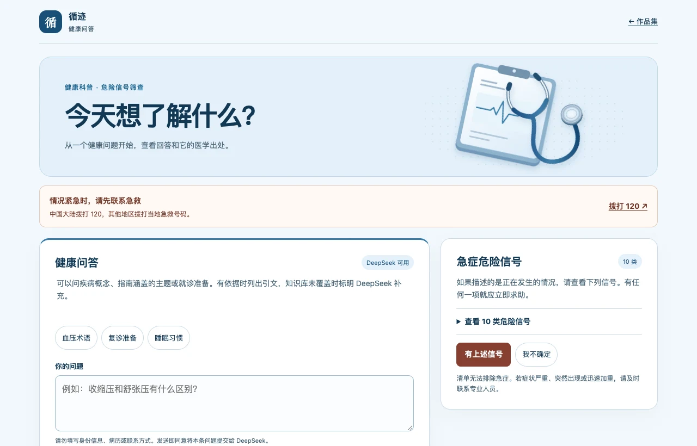

OVERVIEW
从真实问题出发。
循迹从中英文资料中检索相关指南和健康主题，在回答中展示引文。资料不足时单独标注 DeepSeek 补充，并提供独立的急症危险信号入口。
科普问答与危险信号提示各自运行。症状有疑问时，请联系专业人员。
PRODUCT DESIGN
把复杂留在背后。
让访客可以快速提出一般健康问题，并能在需要时直接找到急救入口。
- ↗健康知识问答
- ↗10 类危险信号
- ↗急救入口
PROCESS
连接每一步。
- 输入问题或查看清单
- 危险信号提示
- 求助入口或健康科普
查看技术与版本说明 ＋
科普问答与危险信号提示各自运行。症状有疑问时，请联系专业人员。
相关技术：DeepSeek · Cloudflare Workers · SQLite。流程图为项目组织方式的概括，具体实现与运行要求以项目文档为准。
RESULTS & SCOPE
让结果可查看。
已实现输入、反馈与移动端布局。清单与关键词触发覆盖有限，无法排除急症。
打开健康问答